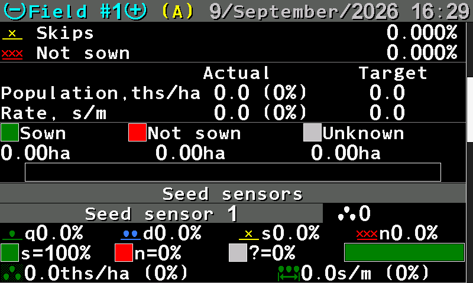
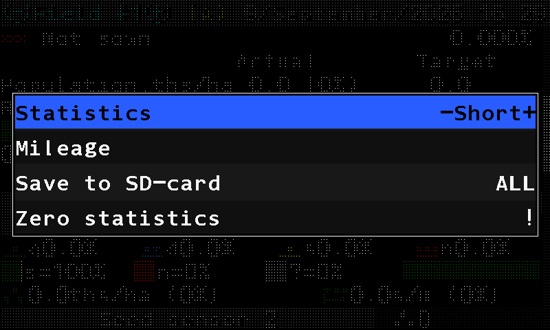

L'écran Statistics
Le rapport du travail sur chaque champ, bloc par bloc et ligne par ligne — et le menu qui choisit le champ, enregistre le rapport et l'efface.
L'écran Statistics (statistiques) est le rapport du travail : la distance parcourue, la surface couverte, la quantité semée et la régularité du semis. Il est conservé séparément pour chaque champ et survit à l'extinction. Ouvrez-le avec « HOME » depuis l'écran Table (deux fois depuis l'écran d'accueil) ; quittez-le avec « BACK ».
Le rapport est une longue liste. Faites-la défiler avec « UP » et « DOWN », ou glissez vers le haut et le bas.
L'en-tête et le travail sur le champ

- Numéro de champ. Le champ dont vous voyez le rapport. « MINUS » et « PLUS » — ou un glissement à deux doigts — affichent un autre champ.
- (A). C'est le champ actif — celui dans lequel le panneau écrit maintenant.
- Date et heure. La date du jour et l'heure.
- Trajet. Distance parcourue, en km.
- Surface. Surface couverte, en ha.
- Temps de travail. Heures, minutes et secondes de travail.
- Vitesse de déplacement. La vitesse d'avancement moyenne.
- Started / Ended. Quand le travail sur ce champ a commencé et fini.
- Seeding. Le bloc suivant — voir plus bas.
Le bloc de semis

- Seeds sown (x1000). Le total, en milliers de graines.
- Quality. La part de graines placées une à une, comme voulu. Jugez le travail sur ce chiffre.
- Doubles. Deux graines là où une était prévue.
- Skips. Un vide là où une graine était prévue.
- Not sown. La part du travail où rien n'est sorti du tout.
- Actual / Target. Ce qui a été appliqué par rapport à ce qui était réglé.
- Population, ths/ha. En milliers par hectare ; l'écart entre parenthèses.
- Rate, s/m. En graines par mètre ; la consigne à droite.
- Sown / Not sown / Unknown. Le champ réparti en trois, en hectares.
- Barre. La même répartition en barre de couleur : vert semé, rouge non semé, gris inconnu.
- Seed sensors. Le bloc suivant — section par section.
Unknown (inconnu) est la surface parcourue pendant que le panneau ne pouvait pas juger — ce n'est pas un défaut, mais ce n'est pas non plus la preuve d'un travail effectué.
Section par section

- Seed sensors. Un bloc par section suit.
- Seed sensor 1. Le numéro de la section et les graines qu'elle a comptées.
- q d s n. Qualité, doubles, manques et non semé pour cette section.
- Sown / not sown / unknown. La part de chacun pour cette section (s, n, ?) et la barre.
- Population. Milliers par hectare pour cette section, avec son écart.
- Spacing. Graines par mètre pour cette section, avec son écart.
C'est ici qu'un semoir irrégulier se trahit. Une section de qualité inférieure aux autres, ou dont la partie rouge de la barre est plus longue, désigne ce rang : une sortie bouchée, un disque usé, un capteur à nettoyer.
Blocs qui apparaissent sur d'autres machines
| Bloc | Ce qu'il contient |
|---|---|
| Work without alarms control | La part du travail que le panneau n'a pas surveillée — effectuée avec la surveillance désactivée ou verrouillée. |
| Speed control | Sur quelle distance et pendant combien de temps vous avez roulé hors de la plage de vitesse admise. |
| Fertilizing, Liquid fertilizer | Fertilisé / non fertilisé / inconnu, si la machine les applique. |
| Product | Pour un produit appliqué en masse : la quantité appliquée, et la dose réelle par rapport à la consigne en kg/ha. |

Le menu de l'écran
Appuyez sur « MENU », ou touchez avec deux doigts.

| Élément | Ce qu'il fait |
|---|---|
| « Select field » (choisir le champ) | Fait du champ affiché le champ actif — le panneau y écrit désormais. Affiché seulement quand vous regardez un champ qui n'est pas actif. Un champ dont les statistiques ne sont pas vides ne peut pas être choisi tant que ses données ne sont pas effacées ; le panneau le dit et demande. |
| « Statistics » (statistiques) | Bascule le rapport entre court et complet. Le rapport court garde les totaux et omet le détail par section. |
| « Mileage » (kilométrage) | Trajet en km et surface en ha sur toute la vie du système. Ces totaux ne peuvent pas être remis à zéro. Sans capteur de vitesse, le temps de fonctionnement cumulé à la place. |
| « Save to SD-card » (enregistrer sur carte SD) | Écrit un champ, ou tous, sur la carte mémoire. Affiché tant qu'une carte est dans le logement. |
| « Zero statistics » (remettre les statistiques à zéro) | Efface les statistiques. |
Votre machine fait quelque chose que cette page n'explique pas ? Écrivez à support@agriwelt.com — un ingénieur vous répond.